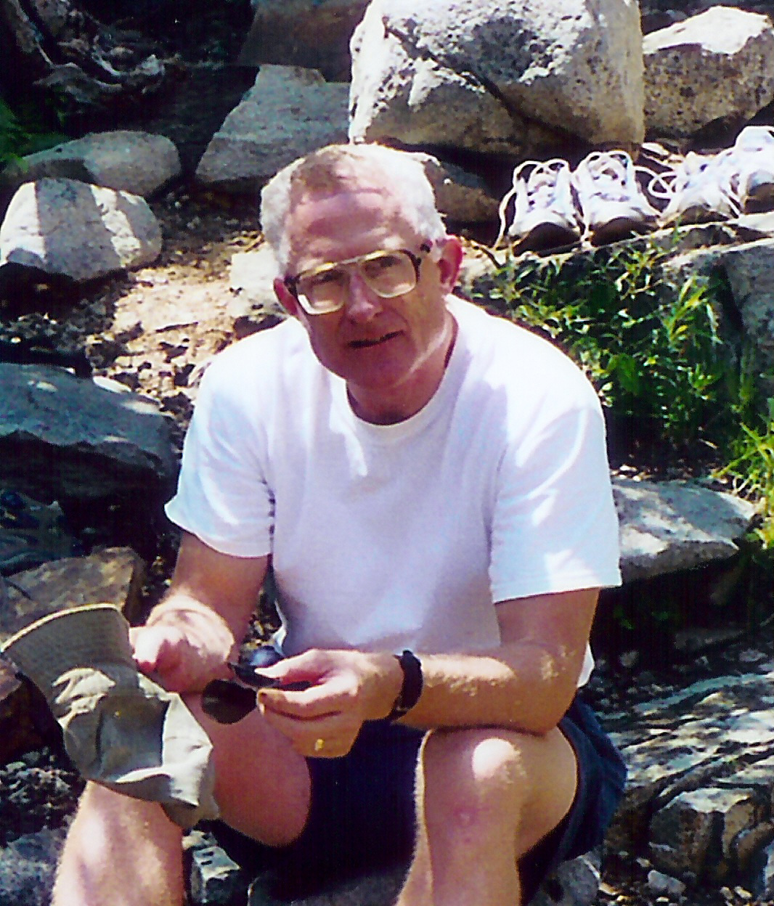
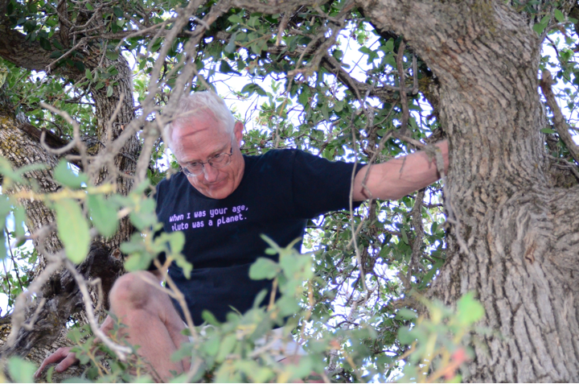
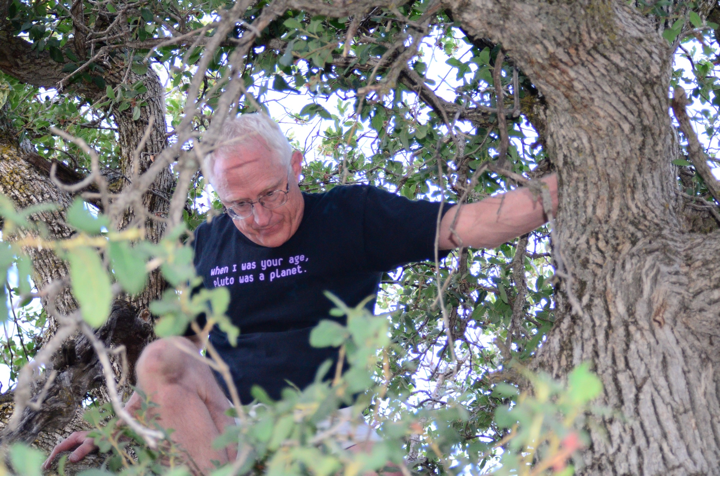

Meet the Camp Director

Don McCarthy is a research Astronomer and Lecturer with Steward Observatory at
The University of Arizona. He specializes in infrared astronomy and engineering and has been passionately doing science education at all age levels throughout his life. He received an undergraduate degree in physics at Princeton (1970) and a PhD in astronomy from The University of Arizona (1976). He was a Finalist in NASA's initial Space Shuttle astronaut selection (1978) and served in the US Army after college ROTC. Since 1989, his Astronomy Camps at Mt. Lemmon and Kitt Peak observatories have attracted teenage students, educators, Girl Scout leaders, and general adults from 50 US states and 20 foreign countries. Representing Astronomy Camp, Dr. McCarthy received the 2012 Education Prize of the American Astronomical Society:
[AZ Daily Star,
AZ Daily Wildcat,
Astronomical Society of the Pacific,
Tucson Lifestyle,
Princeton alumni].
Dr. McCarthy has a passion for combining astronomical research and inquiry-based science education. His teaching philosophy derives from his love of both athletics and science and aligns well with Dr. Robert Yager's essay "Never Playing the Game." Each semester he teaches a large enrollment, undergraduate course in astronomy or cosmology to non-science majors with an emphasis on quantitative literacy and essential arithmetic skills and involves students in hands-on learning with unusual projects. As leader of the education and public outreach program for NASA's Near-Infrared Camera project with the James Webb Space Telescope, he is involved with a partnership in science education with the Girl Scouts of the USA, involving adult trainers around the world along with graduate students and postdocs.
Dr. McCarthy pioneered techniques for achieving high angular resolution at infrared wavelengths from both ground and space based telescopes by developing new techniques and instrumentation for interferometry, speckle imaging, active tip/tilt correction, and adaptive optics. With these tools, he initiated the direct detection of low mass companions to nearby stars, imaged the near-infrared emission from the Galactic Center source Sgr A*, characterized the shapes of circumstellar dust disks, discovered waves in Pluto's atmosphere, and examined the surface characteristics of moons, asteroids, and Kuiper Belt Objects.
At Astronomy Camp Dr. McCarthy and his colleagues provide hands-on activities and lectures on topics ranging from the Solar System to Cosmology. Guest leaders and speakers come from a variety of colleges and universities and such prestigious institutions as the National Optical Astronomy Observatories, the National Solar Observatory, the National Radio Astronomy Observatory, and the Planetary Science Institute. They provide a diversity of expertise from celestial mechanics and space missions to theoretical physics.
{kind=link}
Dr. McCarthy has a passion for combining astronomical research and inquiry-based science education. His teaching philosophy derives from his love of both athletics and science and aligns well with Dr. Robert Yager's essay "Never Playing the Game." Each semester he teaches a large enrollment, undergraduate course in astronomy or cosmology to non-science majors with an emphasis on quantitative literacy and essential arithmetic skills and involves students in hands-on learning with unusual projects. As leader of the education and public outreach program for NASA's Near-Infrared Camera project with the James Webb Space Telescope, he is involved with a partnership in science education with the Girl Scouts of the USA, involving adult trainers around the world along with graduate students and postdocs.
Dr. McCarthy pioneered techniques for achieving high angular resolution at infrared wavelengths from both ground and space based telescopes by developing new techniques and instrumentation for interferometry, speckle imaging, active tip/tilt correction, and adaptive optics. With these tools, he initiated the direct detection of low mass companions to nearby stars, imaged the near-infrared emission from the Galactic Center source Sgr A*, characterized the shapes of circumstellar dust disks, discovered waves in Pluto's atmosphere, and examined the surface characteristics of moons, asteroids, and Kuiper Belt Objects.
{kind=link}
At Astronomy Camp Dr. McCarthy and his colleagues provide hands-on activities and lectures on topics ranging from the Solar System to Cosmology. Guest leaders and speakers come from a variety of colleges and universities and such prestigious institutions as the National Optical Astronomy Observatories, the National Solar Observatory, the National Radio Astronomy Observatory, and the Planetary Science Institute. They provide a diversity of expertise from celestial mechanics and space missions to theoretical physics.
{kind=link}
{kind=link}
Administrative & Special Services Staff
- Lisa Valentine and Rhonda Rugg, The University of Arizona Alumni Association: Camp Administration
- Jim Grantham, Site Supervisor, Steward Observatory's Catalina Mountains Station: Telescope and Site Operations
- Bill Wood, Site Supervisor, Steward Observatory's Kitt Peak Station: Telescope and Site Operations
- David Savage, Site Maintenance Manager, Steward Observatory's Catalina Stations: Mt. Lemmon and Mt. Bigelow
Home | Information | Registration | Articles | Links
All Images, Media and Content - Copyright © 2019 Astronomy Camp
Site Design by Jacob Omann. Maintained by Astronomy Camp. Updated December 24, 2018
All Images, Media and Content - Copyright © 2019 Astronomy Camp
Site Design by Jacob Omann. Maintained by Astronomy Camp. Updated December 24, 2018